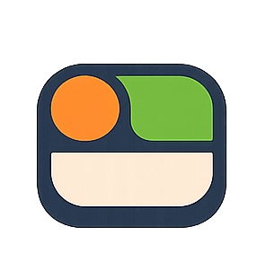

Target launch: August 2026 · Prepared April 2026
Replace localStorage with a real backend. Nothing else ships until this is solid.
Ship the features that differentiate Bento: streaks, multi-university support, and deeper personalization.
Make Bento feel smart and sticky. Insights give users a reason to come back every week.
Get real users in before launch day. Fix what breaks. Ship confidently.